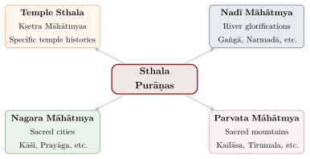
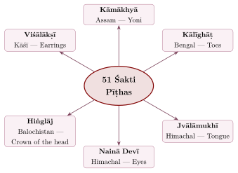

Chapter 8: Upapurāṇas and Sthala Purāṇas — Minor Purāṇas and Sacred Place Histories¶
Beyond the eighteen Mahāpurāṇas lies a vast secondary layer of Purāṇic literature: the Upapurāṇas (subsidiary Purāṇas) and the Sthala Purāṇas or Māhātmyas (accounts of the sanctity of particular places). These texts, long neglected in academic scholarship, are of great importance for understanding the lived religious landscape of South Asia — its sacred geography, local cults, temple histories and regional traditions (Hazra 1958–1963; Rocher 1986).
8.1 The Upapurāṇas — An Overview¶
The term upapurāṇa means “subsidiary Purāṇa.” Tradition holds that there are eighteen Upapurāṇas, mirroring the eighteen Mahāpurāṇas, but the lists given in different texts disagree, and well over a hundred works call themselves Upapurāṇas. R. C. Hazra’s Studies in the Upapurāṇas (1958–63) remains the basic survey; he showed that many of these texts are late (often from the second millennium CE), regional, and closely tied to particular sects or cults (Hazra 1958–1963). Kunal Chakrabarti’s study of the Upapurāṇas composed in Bengal treats them as the record of a “religious process”: brahmin authors absorbed local goddesses, rites and social groups into a Purāṇic framework, and in doing so produced a regional tradition that was at once local and recognisably brahmanical (Chakrabarti 2001).
8.1.1 A Traditional List of Eighteen Upapurāṇas¶
One frequently cited list, found in the Kūrma Purāṇa, runs as follows (Table 8.1; other lists substitute other titles):
| No. | Upapurāṇa | Remarks |
|---|---|---|
| 1 | Sanatkumāra | |
| 2 | Nārasiṃha | Narasiṃha avatāra; an early and comparatively well-preserved Upapurāṇa |
| 3 | Skanda | Distinct from the Mahāpurāṇa of that name |
| 4 | Śivadharma | Early Śaiva ritual and ethical teaching |
| 5 | Daurvāsasa | |
| 6 | Nāradīya | |
| 7 | Kāpila | |
| 8 | Vāmana | |
| 9 | Auśanasa | |
| 10 | Brahmāṇḍa | |
| 11 | Vāruṇa | |
| 12 | Kālikā | Goddess worship in Kāmarūpa (Assam) |
| 13 | Māheśvara | |
| 14 | Sāmba | Sun worship and the Śākadvīpī brahmins |
| 15 | Saura | Sun worship |
| 16 | Pārāśara | |
| 17 | Mārīca | |
| 18 | Bhārgava |
Scholarly Note: The Devī Bhāgavata Controversy
The Devī Bhāgavata Purāṇa occupies a unique position. Śākta traditions consider it a Mahāpurāṇa, identifying it as the true “Bhāgavata” of the list of eighteen and relegating the Vaiṣṇava Bhāgavata to the Upapurāṇas; Vaiṣṇava traditions reverse the classification. Modern scholars generally date the Devī Bhāgavata to the first half of the second millennium CE, later than the Vaiṣṇava Bhāgavata, on which its structure is modelled; C. Mackenzie Brown has shown how it takes over the Bhāgavata’s form and much of its narrative in order to proclaim the supremacy of the Goddess (Brown 1990). Similar claims to Mahāpurāṇa status were made for other works, such as the Gaṇeśa and Mudgala Purāṇas of the Gāṇapatyas.
8.1.2 Characteristics of Upapurāṇas¶
The Upapurāṇas share many features with the Mahāpurāṇas but tend to:
-
Focus more intensely on a specific deity or devotional path
-
Contain more detailed descriptions of specific vratas (observances) and rituals
-
Preserve regional and local traditions more prominently
-
Include more māhātmya material tied to particular regions
8.2 Sthala Purāṇas — Sacred Place Histories¶
The Sthala Purāṇas (sthala, “place”) form a distinct genre within Purāṇic literature. They narrate the sacred history (māhātmya) of specific temples, pilgrimage centres (tīrthas), cities, rivers, and geographical features. They typically explain (Figure 8.1; Table 8.2):
-
How the sacred site originated: Often involving divine manifestation (prākaṭya)
-
Who established the temple or worship: Usually a deity, sage, or ancient king
-
Miracles and divine interventions associated with the site
-
Rituals, festivals, and procedures specific to the site
-
The spiritual merit (puṇya) obtained by visiting, worshipping, or bathing there
8.2.1 Major Categories of Sthala Purāṇas¶

8.2.2 Notable Sthala Purāṇas¶
| Sthala Purāṇa | Sacred Place | Description |
|---|---|---|
| Kāśī Khaṇḍa | Varanasi | Viśvanātha temple, Gaṅgā Māhātmya |
| Setu Māhātmya | Rāmeśvaram | Rāma Setu, Jyotirliṅga |
| Puruṣottama Māhātmya | Purī | Jagannātha temple, Ratha Yātrā |
| Kāñcī Māhātmya | Kāñcīpuram | Sacred city of thousand temples |
| Śrīraṅga Māhātmya | Śrīraṅgam | Raṅganātha temple, island temple |
| Tirupati Sthala Purāṇa | Tirumala | Veṅkaṭeśvara, Padmāvatī |
| Dvārakā Māhātmya | Dvārakā | Kṛṣṇa’s capital city |
| Badarikāśrama Māhātmya | Badrīnāth | Himalayan shrine of Nārāyaṇa |
| Gayā Māhātmya | Gayā | Piṇḍadāna, ancestral rites |
| Narmadā Māhātmya | Narmadā river | Merits of the river; the parikramā (circumambulation) tradition |
8.3 The Concept of Sacred Geography (Puṇya Bhūmi)¶
The māhātmyas collectively construct a sacred geography of South Asia — a landscape in which rivers, mountains, forests and cities are charged with religious significance, and in which pilgrimage (tīrthayātrā) links distant regions. Diana Eck has described this as a “sacred geography” that long preceded, and later fed into, modern ideas of India as a single land (Eck 2012).
The best-known expression of this geography is the list of seven cities that grant liberation (sapta purī): the birthplaces of Rāma and Kṛṣṇa at Ayodhyā and Mathurā, Haridvāra (Māyā) where the Gaṅgā leaves the mountains, Śiva’s city of Kāśī, Kāñcī in the south, Ujjain (Avantikā) with its temple of Mahākāla, and Kṛṣṇa’s western capital Dvārakā:
The Seven Sacred Cities (traditional verse)
ayodhyā mathurā māyā kāśī kāñcī avantikā /
purī dvāravatī caiva saptaitā mokṣadāyikāḥ //
Translation:
“Ayodhyā, Mathurā, Māyā (Haridvāra), Kāśī, Kāñcī, Avantikā and the city of Dvāravatī — these seven bestow liberation.”
8.4 The Dvādaśa Jyotirliṅga Tradition¶
The twelve Jyotirliṅgas (“liṅgas of light”) are the most celebrated set of Śiva shrines. The list is given in the Śiva Purāṇa and in a popular hymn (the Dvādaśajyotirliṅgastotra); for several of the twelve, more than one site claims the title. Each has its own sthala narrative — for instance, Somanātha is where the Moon worshipped Śiva to be freed from Dakṣa’s curse, and Kedārnātha where Śiva, hiding as a bull from the Pāṇḍavas, left his hump (Table 8.3).
| No. | Jyotirliṅga | Location |
|---|---|---|
| 1 | Somanātha | Prabhāsa, Gujarat |
| 2 | Mallikārjuna | Śrīśailam, Andhra Pradesh |
| 3 | Mahākāleśvara | Ujjain, Madhya Pradesh |
| 4 | Oṃkāreśvara | Oṃkāreśvara, Madhya Pradesh |
| 5 | Kedāreśvara | Kedārnāth, Uttarakhand |
| 6 | Bhīmaśaṅkara | Maharashtra (also claimed in Assam) |
| 7 | Viśveśvara | Kāśī, Uttar Pradesh |
| 8 | Tryaṃbakeśvara | Nāsik, Maharashtra |
| 9 | Vaidyanātha | Deoghar, Jharkhand (also claimed at Parli, Maharashtra) |
| 10 | Nāgeśvara | Near Dvārakā, Gujarat (other sites also claim it) |
| 11 | Rāmeśvara | Rāmeśvaram, Tamil Nadu |
| 12 | Ghṛṣṇeśvara | Ellora, Maharashtra |
8.5 Significance and Contemporary Relevance¶
The Upapurāṇas and Sthala Purāṇas remain part of living religious practice. Temple priests (arcakas) draw on them for ritual procedures and festival calendars; pilgrims undertake tīrthayātrā on the authority of their promises; and regional māhātmyas tie local identity to the pan-Indian tradition. For historians they preserve, usually in mythologised form, temple foundation legends, royal patronage, local cults and social history (Section 8.13). The sacred status that they give to rivers such as the Gaṅgā and Yamunā is often invoked by modern campaigns against pollution, although sacredness has not in itself prevented the rivers’ degradation.
8.6 Detailed Study of Select Upapurāṇas¶
The Upapurāṇas as a class have received less scholarly attention than the Mahāpurāṇas, but several of them are major sources for the theology, ritual and regional traditions of particular sects.
8.6.1 The Devī Bhāgavata Purāṇa¶
The Devī Bhāgavata Purāṇa, comprising traditionally 18,000 ślokas in twelve books (skandhas), is the most extensive Śākta Purāṇa. It deliberately parallels the structure of the Vaiṣṇava Bhāgavata but replaces the primacy of Viṣṇu-Kṛṣṇa with the supreme Goddess (parā śakti). It retells the myths of the Devī Māhātmya, describes the Goddess’s jewelled island (Maṇidvīpa), and includes in its seventh book the Devī Gītā, in which the Goddess teaches Himālaya a Śākta form of Vedānta and yoga, modelled on the Bhagavad Gītā.
8.6.2 The Gaṇeśa Purāṇa¶
The Gaṇeśa Purāṇa, divided into two parts (Upāsanā Khaṇḍa and Krīḍā Khaṇḍa), is, with the Mudgala Purāṇa, the principal scriptural authority for the Gāṇapatya tradition, which worships Gaṇeśa as the supreme deity. A relatively late text, probably of the first half of the second millennium CE, it describes four descents of Gaṇeśa in the four ages — Mahotkaṭa (Kṛta), Mayureśvara (Tretā), Gajānana (Dvāpara) and Dhūmraketu (Kali) — and contains the Gaṇeśa Gītā. The Mudgala Purāṇa describes eight incarnations of Gaṇeśa.
8.6.3 The Kālikā Purāṇa¶
The Kālikā Purāṇa, composed in the Kāmarūpa region (Assam), probably around the tenth or eleventh century, is a key source for the Śākta traditions of eastern India. It describes the Kāmākhyā temple and its goddess in detail, prescribes elaborate rituals of goddess worship — including a notorious chapter on blood sacrifice — and preserves regional myths, such as the story of the river Brahmaputra, not found elsewhere.
8.7 The Nadī Māhātmyas: River Glorifications¶
Among the most popular kinds of māhātmya are those glorifying the sacred rivers (Table 8.4).
8.7.1 The Seven Sacred Rivers¶
Invocation of the Seven Rivers (traditional, used in ritual)
Sanskrit:
gaṅge ca yamune caiva godāvari sarasvati
narmade sindhu kāveri jale ’smin sannidhiṃ kuru
Translation:
“O Gaṅgā, Yamunā, Godāvarī, Sarasvatī, Narmadā, Sindhu, and Kāverī — be present in this water!”
| River | Divine Association | Purāṇic Māhātmya |
|---|---|---|
| Gaṅgā | Viṣṇu’s feet; Śiva’s locks | Descended from heaven through Bhagīratha’s tapas; purifies all sins |
| Yamunā | Daughter of Sūrya; sister of Yama | Kṛṣṇa’s river in Vraja |
| Sarasvatī | Vāg Devī | The “invisible” river, believed to join the Gaṅgā and Yamunā underground at Prayāga |
| Narmadā | Born, in one legend, from Śiva’s body | Its stones are worshipped as Śiva liṅgas; the parikramā tradition (Revākhaṇḍa of the Skanda Purāṇa) |
| Godāvarī | Gautama’s tapas | “Dakṣiṇa Gaṅgā” — the Gaṅgā of the South |
| Kāverī | Sage Agastya | “Ponni” (the golden one) in Tamil tradition |
| Sindhu | The Indus | Praised above all other rivers in the Ṛgveda’s hymn to the rivers (10.75) |
8.7.2 The Narmadā Parikramā¶
The Narmadā Parikramā — the circumambulation of the Narmadā on foot, from its source at Amarkaṇṭak to its mouth near Bharuch and back along the opposite bank — is one of the most demanding pilgrimages in India. The journey covers roughly 2,600 kilometres; tradition prescribes a period of three years, three months and thirteen days. The Revākhaṇḍa of the Skanda Purāṇa describes the merit of the pilgrimage and the sacred sites along both banks.
8.8 The Śakti Pīṭha Tradition¶
The Śakti Pīṭhas — sites where, according to a myth developed in the Purāṇas and Tantras, parts of the goddess Satī’s body fell when Viṣṇu’s discus dismembered the corpse carried by the grieving Śiva — form one of the most important pilgrimage networks of the Śākta tradition. Different texts enumerate different numbers of Pīṭhas, from four to 108; the figure of fifty-one is the most popular. The Śākta pīṭhas and their Tantric context are treated more fully in Volume 6, Tantra–Āgama. See Figure 8.2.

The Four Early Pīṭhas
The earliest Tantric texts that speak of pīṭhas, Hindu and Buddhist, name four: Oḍḍiyāna (probably in the Swat valley, Pakistan), Jālandhara (associated with Jvālāmukhī in Himachal Pradesh), Pūrṇagiri (of uncertain location) and Kāmarūpa (Kāmākhyā, Assam). The larger lists of fifty-one or more pīṭhas developed later.
8.9 The Cār Dhām and Pilgrimage Networks¶
The Cār Dhām (Four Abodes) frame the whole subcontinent as a sacred geography oriented to the four cardinal directions (Table 8.5):
| Dhām | Direction | Deity | Sthala Purāṇa Tradition |
|---|---|---|---|
| Badrīnāth | North | Viṣṇu (Badrī Nārāyaṇa) | Śaṅkarācārya’s restoration; Tapta Kuṇḍa |
| Rāmeśvaram | South | Śiva (Rāmanātha) | Rāma established the Liṅga before crossing to Laṅkā |
| Dvārakā | West | Kṛṣṇa (Dvārakādhīśa) | Kṛṣṇa’s capital |
| Purī (Jagannātha) | East | Jagannātha | Puruṣottama Kṣetra; the Ratha Yātrā |
Tradition attributes this four-fold pilgrimage, together with the four monasteries (maṭhas) at or near the same places, to Śaṅkara. The attribution belongs to later hagiography and the institutionalised circuit is probably much later than Śaṅkara, but the idea expresses a vision of the subcontinent as a single sacred space bounded by its four quarters.
8.10 The Sthala Purāṇas of South Bhārata: A Special Tradition¶
South Bhārata possesses an exceptionally rich tradition of Sthala Purāṇas, many composed in regional languages (Tamil, Telugu, Kannada, Malayalam) alongside Sanskrit. The Tēvāram hymns of the Nāyaṉmārs and the Divya Prabandham of the Āḻvārs function as Tamil Sthala Purāṇas, glorifying specific temples visited by these saint-poets.
Tamil also developed its own purāṇam literature. Cēkkiḻār’s Periya Purāṇam (12th century), composed at the Cōḻa court, tells the lives of the sixty-three Nāyaṉmār saints and became the twelfth book of the Śaiva canon (Tirumuṟai). Later works such as the Kanta Purāṇam of Kacciyappa Civācāriyar, a Tamil retelling of the Skanda myth, and the Tiruviḷaiyāṭal Purāṇam of Parañcōti Muṉivar, on the sixty-four “sacred sports” of Śiva at Madurai, show how Sanskrit Purāṇic material was recast in Tamil around particular temples and cities. Hundreds of later Tamil talapurāṇams (from Sanskrit sthala) were composed for individual shrines.
8.10.1 The Pañcārāma Kṣetras¶
The five Śiva temples of the Andhra region — Amarārāma (Amarāvatī), Drākṣārāma, Somārāma (Bhīmavaram), Kumārārāma (Sāmarlakoṭa) and Kṣīrārāma (Pālakollu) — form a pilgrimage circuit with individual Sthala Purāṇas describing the circumstances of each Liṅga’s manifestation.
8.10.2 The Divya Deśas¶
The 108 Divya Deśas — temples glorified in the 4,000 verses of the Nālāyira Divya Prabandham by the twelve Āḻvār saints — constitute the most important Viṣṇu temple pilgrimage network in South Bhārata. Each Divya Deśa has its own Sthala Purāṇa, its own processional deity (Utsava Mūrti), and its own festival calendar (Table 8.6).
| Region | Number | Notable Temples |
|---|---|---|
| Cōḻa Nāḍu (Tamil Nadu) | 40 | Śrīraṅgam, Kumbakoṇam, Chidambaram |
| Pāṇḍya Nāḍu (Tamil Nadu) | 18 | Śrīvilliputtūr, Tirukkuṟuṅkuṭi |
| Naṭu Nāḍu (Tamil Nadu) | 2 | Tirukkōvalūr |
| Toṇṭai Nāḍu (Tamil Nadu) | 22 | Kāñcīpuram temples |
| Malai Nāḍu (Kerala) | 13 | Tiruvanantapuram |
| Vaṭa Nāḍu (the North) | 11 | Tirumala, Ayodhyā, Mathurā, Badrīnāth |
| Celestial | 2 | Vaikuṇṭha, the Ocean of Milk |
8.11 The Pañcabhūta Sthalas¶
A distinctive group of Śaiva sites, the Pañcabhūta Sthalas, comprises five South Indian temples where Śiva is worshipped as the embodiment of each of the five elements (Table 8.7):
| Element | Temple | Location | Significance |
|---|---|---|---|
| Pṛthvī (Earth) | Ekāmbareśvara | Kāñcīpuram | Liṅga of earth (sand); the sacred mango tree |
| Jala (Water) | Jambūkeśvara | Tiruvānāikka | Water springs around the Liṅga |
| Agni (Fire) | Aruṇācaleśvara | Tiruvaṇṇāmalai | Hill itself is the Liṅga of fire; Kārttikai Dīpam |
| Vāyu (Air) | Kāḷahastīśvara | Śrīkāḷahasti | Air liṅga; a lamp before it is said to flicker without draught |
| Ākāśa (Space) | Naṭarāja | Chidambaram | The Citsabhā — the space where Śiva dances |
8.12 Reading a Sthala Purāṇa: Authority, Structure and Motifs¶
The sections above list the major networks of sacred places. This section turns to the texts themselves and asks how a māhātmya works: how it claims authority, how it is put together, what stories it habitually tells, and how such texts were composed and made public.
8.12.1 How a Māhātmya Claims Authority¶
Most Sanskrit māhātmyas present themselves as part of a Mahāpurāṇa, most often the Skanda, but also the Padma, Brahmāṇḍa and others. Their colophons place them in a named section (khaṇḍa) of that Purāṇa. Some were absorbed into the printed vulgates, which is why the printed Skanda Purāṇa is in large part a collection of such texts (Section 7.2 and the profile of the Skanda in Chapter 7). Many more circulate as independent manuscripts and appear in no edition of the Purāṇa they claim to belong to. The attribution is less a statement of textual history than a claim of standing. By placing a local story inside a work ascribed to Vyāsa, the māhātmya makes the shrine part of the all-India tradition. The title of the Skanda Purāṇa in particular came to serve almost as a general home for such texts, a problem discussed in Rocher’s survey (Rocher 1986).
The narration is framed as a dialogue between an authoritative speaker and a questioner: Sūta and the sages of the Naimiṣa forest, Śiva and Pārvatī, or Skanda and a sage. In the Kāśīkhaṇḍa the listener is Agastya. He has left Kāśī for the south on the gods’ errand of humbling the Vindhya mountain, and he hears the glory of the city he cannot return to. The frame thus enacts the longing for the place that the text means to arouse. The body of a typical māhātmya follows a recognisable order:
-
an account of how the deity came to be present at the site, often in a former age;
-
a tour of the subsidiary tīrthas within the sacred zone (kṣetra), each with its own story;
-
rules for bathing, worship and gifts, and a festival calendar;
-
a phalaśruti promising rewards to those who visit, or who merely hear the text.
A favourite device is the sinner saved by accident. A thief, a hunter or an animal does something at the site without meaning to, such as dying within its bounds, being splashed by its water or staying awake on a holy night, and earns the full reward. The device makes the point that the power belongs to the place, not to the worshipper’s merit. The topography of Kāśī as the māhātmyas describe it is treated in Volume 21, Bhūgola.
Because māhātmyas were revised as their shrines grew, comparing their versions can show a sacred landscape taking shape. Hans Bakker’s study of Ayodhyā edited the Ayodhyāmāhātmya, which claims to belong to the Vaiṣṇavakhaṇḍa of the Skanda Purāṇa, in its different recensions, and read them against inscriptions and other evidence. In Bakker’s reconstruction the earlier layers centre on bathing places along the Sarayū and on older Vaiṣṇava and Śaiva shrines. Sites tied to episodes of Rāma’s life gain importance in later recensions, in step with the growth of Rāma devotion in the second millennium CE (Bakker 1986). The method does not prove or disprove the beliefs the text expresses. It shows, as the scholarly note below says of the genre generally, that a māhātmya is a historical document of the period in which each layer was written.
8.12.2 Tamil Talapurāṇams and the Logic of the Shrine Myth¶
The Tamil talapurāṇams (Section 8.10) were the subject of David Shulman’s Tamil Temple Myths, which surveyed a large corpus of them and argued that beneath their variety lies a small number of recurrent patterns (Shulman 1980). Four are especially prominent.
The shrine that survives the flood.
Many shrines claim to have outlasted the dissolution of the world (pralaya) and to be the place where creation began again. Cīkāḻi (Sirkazhi) is said to have floated on the waters like a boat, hence its name Tōṇipuram, “boat city”. Kumpakōṇam takes its name from the pot (kumbha) holding the seed of creation, which the flood carried there and Śiva broke with an arrow. On Shulman’s reading such myths make the shrine a self-sufficient world, older than the cosmic cycle and closed within its own boundaries, so that whoever dies within them is freed.
The discovery of the hidden god.
The god is often said to have been found rather than installed. A cow lets her milk flow onto an anthill and the liṅga is uncovered beneath it, or a hunter’s arrow or a woodcutter’s axe strikes a hidden liṅga, which bleeds. The scar may still be shown to pilgrims. The self-manifest (svayaṃbhū) liṅga thus enters the human world through an act of violence, and Shulman connects this to a wider theme of sacrifice in the myths.
The divine marriage.
A local goddess, frequently a powerful virgin, is married to Śiva, and the marriage brings her dangerous power into the order of the temple. At Madurai, Mīnākṣī is born to the Pāṇḍya king with three breasts. She grows up a warrior and conquers the world until she meets Śiva, at which point the third breast disappears and she becomes his bride. The Cittirai festival re-enacts the wedding every year. Viṣṇu, as the goddess’s brother, gives the bride away; in the popular telling his form as Aḻakar sets out from his hill shrine to attend the wedding, arrives too late and turns back at the Vaikai river. At Kāñcī, the goddess Kāmākṣī does penance under a mango tree, and when a flood threatens she clasps her sand liṅga to save it. That liṅga is worshipped at the Ekāmbareśvara temple (Table 8.7).
The localisation of universal myth.
Pan-Indian stories such as the churning of the ocean, Dakṣa’s sacrifice and the appearance of Śiva as a column of fire (liṅgodbhava) are relocated to the shrine. Each major temple thus becomes the place where the universal event actually happened.
Shulman’s interpretations, especially of the erotic and violent symbolism surrounding the goddess, have been debated, but his typology remains the starting point for the study of the genre. It also explains why the same motif can be met at shrine after shrine: the talapurāṇam is less a record of a single place than a local performance of a shared religious grammar.
8.12.3 Composing and Premiering a Talapurāṇam¶
A talapurāṇam often began as a Sanskrit māhātmya, itself claiming to come from the Skanda or another Purāṇa. A poet then rendered it into Tamil verse, frequently with the support of the temple, a local patron or one of the Śaiva monasteries (ātīṉam). A few talapurāṇams are older, but most surviving works were composed between roughly the sixteenth and the nineteenth centuries. Its last great practitioner was Mīṉāṭcicuntaram Piḷḷai (1815–1876), poet of the Tiruvāvaṭutuṟai monastery, who wrote a large number of them; his pupil U. Vē. Cāminātaiyar, later famous as the editor of the Caṅkam classics, wrote his biography. A new work was made public through an araṅkēṟṟam (“ascent to the stage”). The poet read and expounded it before the assembled scholars and patrons, usually in the temple itself, and had to answer objections. Tradition tells the same of Kampaṉ’s Rāmāyaṇa at Śrīraṅgam. The genre thus moved between Sanskrit and Tamil, and between text and public performance.
Telugu has a parallel tradition, including Śrīnātha’s Kāśīkhaṇḍamu and his Bhīmakhaṇḍamu on Drākṣārāma, one of the Pañcārāma shrines (Section 8.10), and Dhūrjaṭi’s Śrīkāḷahastīśvara Māhātmyamu; these are discussed as literature in Volume 8, Kāvya Kalpalatā. The genre is still productive. Prose booklets on the history of a temple (Tamil talavarāḻāṟu) are sold at most South Indian shrines. They retell the talapurāṇam, add the temple’s recent history and its festival calendar, and are now joined by temple websites that do the same.
8.13 The Sthala Purāṇas and Architectural Tradition¶
The Sthala Purāṇas also preserve, in mythologised form, traditions about the foundation and rebuilding of temples, the origin of festivals and processional routes, and the rights of particular communities in temple service. The concept underlying them is that of the kṣetra (“field”): a place where the boundary between the human and divine realms is believed to be especially permeable, whose sanctity the māhātmya explains by narrating the divine events that occurred there and the benefits that await the pilgrim.
Scholarly Note: Māhātmyas and Temple Chronicles as Historical Sources
While the Sthala Purāṇas are primarily devotional, historians increasingly use them, together with temple chronicles and inscriptions, as sources for local history. Diana Eck’s study of Banaras, for example, draws extensively on the Kāśīkhaṇḍa of the Skanda Purāṇa to reconstruct the sacred topography of the medieval city (Eck 1982). Temple chronicles such as the Kōyil Oḻugu of Śrīraṅgam, which records the removal of the temple’s image to safety during the raids of the fourteenth century, belong to a related genre. Such texts must be read critically: they frequently project later arrangements back into a mythic past.
The Vrata Literature: Women’s Religious Agency
The Purāṇas and Upapurāṇas contain extensive vrata (vow) literature describing observances practised especially by women. Vows such as Hartalikā and Vaṭa Sāvitrī, the latter modelled on the Sāvitrī story of the Mahābhārata, are kept mainly by women, often at home and without a priest. The vrata texts supply the stories (kathās), procedures and promised rewards for these observances. Scholars have read them in two ways: as a domain in which women exercised religious agency and transmitted their own narratives, and as a means of reinforcing the ideal of the devoted wife (pativratā), since so many vows are undertaken for a husband’s long life.
8.13.1 Sthala Purāṇas and the Creation of Sacred Landscapes¶
Through the māhātmya narratives, ordinary geographical locations are transformed into tīrthas (“crossings” between the human and divine worlds). The site is identified as the location of a divine event — a god’s appearance, a sage’s austerity, a cosmic battle; it is declared to possess particular powers of purification, healing or liberation; and ritual prescriptions connect the pilgrim’s physical journey to an inner transformation. The same strategies allowed brahmanical tradition to incorporate local and tribal deities into the Purāṇic pantheon, as in the case of Jagannātha at Purī, whose cult has long been thought to have tribal roots.
8.14 Living Traditions: Purāṇic Oral Performance¶
The Purāṇas were never merely written texts; they were — and remain — performance traditions. Purāṇic discourse (purāṇa pravacana) remains a vibrant tradition across India, with trained expositors (kathāvācakas) narrating Purāṇic stories to audiences over periods ranging from a single evening to the traditional seven days (saptāha).
The Bhāgavata Saptāha, a seven-day recitation of the Bhāgavata Purāṇa, remains a popular religious event in Hindu culture. The expositor combines textual recitation with commentary, song, dramatic performance, and philosophical exposition. This oral tradition keeps the Purāṇas accessible to those who cannot read Sanskrit, in keeping with their traditional role as a “fifth Veda” open to audiences excluded from the Veda itself (Section 1.2).
The Harikathā and Kathā Kālakṣepam Traditions
The performance traditions of Harikathā (in Karnataka, Andhra and Maharashtra, where the related form is called kīrtan) and Kathā Kālakṣepam (in Tamil Nadu) combine Purāṇic storytelling with classical music, gesture and commentary. The performer typically narrates a story from the Bhāgavata or Rāmāyaṇa, interspersing it with devotional songs (Marathi abhaṅgas, Karnatak kīrtanas) and interpretive commentary.
The saptāha’s seven days come from the Bhāgavata’s own frame story. King Parīkṣit, cursed to die within seven days, spends them listening to the Purāṇa from the sage Śuka. A separate text, the Bhāgavata Māhātmya, turns this frame into a rite. The version in general use claims to belong to the Padma Purāṇa (a shorter one claims the Skanda); it is usually printed at the head of editions of the Bhāgavata and recited at the opening of a saptāha. It tells how Bhakti, personified as a young woman, found her sons Jñāna and Vairāgya (knowledge and detachment) grown old and feeble in the Kali age, and how they were revived by hearing the Bhāgavata recited. It then tells of the brahmin Gokarṇa, whose dissolute brother Dhundhukārī died a violent death and became a ghost. Gokarṇa freed him by a seven-day recitation: the ghost sat in a bamboo of seven joints, one of which split on each day of the reading. The text ends with rules for the reciter, the sponsor and the listeners. It is a clear case of a māhātmya doing for a text what the sthala māhātmyas do for a place (Section 8.12). It supplies a charter story, a ritual procedure and a promise of reward, and so gives the performance its form.